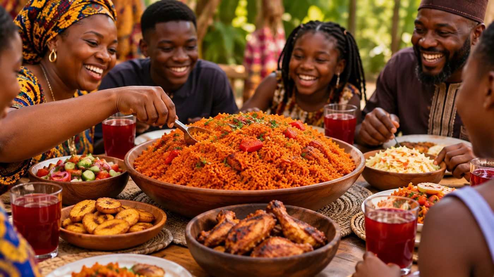

Orientation
Jollof rice has a special place in social and cultural life. This page brings the story back to people: families, celebrations, guests and identity.
Why it matters: Understanding why Jollof matters to people helps you cook it with respect for the tradition, not just as a recipe.
A dish at the centre of the table
- where the Jollof sits on the table — at the centre, in one large shared dish
- the signs of hospitality: food being served to others and many people sharing one meal

Four ways Jollof connects people
Family traditions
Recipes pass from parents and grandparents to younger family members through watching and taking part — how to choose ingredients, prepare the sauce, cook the rice and adjust flavours.
Celebrations
Weddings and traditional marriage ceremonies, birthdays, graduations, religious festivals, family reunions, community events and holiday gatherings. Jollof is popular and can be made in large quantities.
Hospitality
Preparing and offering Jollof to guests is a way of welcoming them, showing generosity and expressing appreciation.
Cultural identity
People often identify strongly with the style they grew up eating, connected to childhood, family recipes and national identity.
The friendly Jollof rivalry
Which country makes the best Jollof? The debate is especially visible between Ghana and Nigeria, though others join in — on social media, at cooking competitions and food festivals, at gatherings and in everyday conversation.
People compare taste, aroma, colour, texture, ingredients and technique. The discussions can be passionate, but they are generally an expression of culinary pride.
The key idea: rather than competing claims to one correct recipe, the different versions are expressions of regional culinary diversity.
Quick check: the rivalry
Key takeaways
- Jollof is passed down through family cooking traditions.
- It is a celebration and hospitality dish, often made in large quantities.
- The friendly rivalry reflects pride and diversity, not one “correct” recipe.